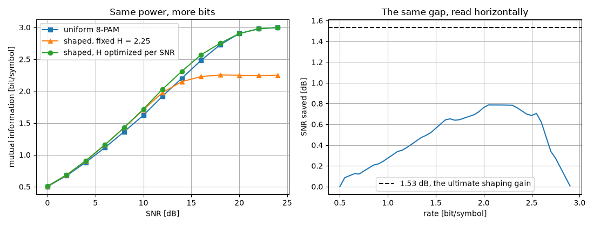

Probabilistic Shaping#
In this tutorial, we send some constellation points more often than others. A uniform QAM or PAM constellation is not the best a Gaussian channel can do: it loses up to 1.53 dB against a Gaussian input, and that loss is recovered by choosing how often each point is transmitted rather than by changing the points themselves.
What you’ll learn:
Why the shaped distribution is Maxwell-Boltzmann, and nothing else.
How a distribution matcher turns uniform data bits into shaped symbols, exactly and invertibly (CCDM and ESS).
How to assemble a probabilistic amplitude shaping (PAS) transmitter as a
Sequentialchain, and why the FEC decoder belongs before the dematcher.How to measure what shaping actually buys, in bit/symbol and in dB.
Introduction#
Prerequisites#
Make sure you have the following Python libraries installed:
numpy
matplotlib
comnumpy
Import Libraries#
import numpy as np
import matplotlib.pyplot as plt
from comnumpy import sweep
from comnumpy.core import Sequential
from comnumpy.core.channels import AWGN
from comnumpy.core.generators import SymbolGenerator
from comnumpy.core.information import compute_mi
from comnumpy.core.mappers import SymbolMapper
from comnumpy.core.shaping import (AmplitudeDemapper, AmplitudeMapper,
ConstantCompositionMatcher,
DistributionDematcher, DistributionMatcher,
SphereShaper, distribution_entropy,
maxwell_boltzmann, shaping_gain_dB)
Define Parameters#
We work on 8-PAM written on its natural odd-integer grid. Shaping is a one-dimensional operation – a square QAM constellation is the product of two PAM axes, so shaping the axis shapes the QAM – and a matcher only ever sees the positive half of the grid, for a reason explained in the PAS section below.
img_dir = "../../docs/examples/img/"
# Parameters
pam8 = np.arange(-7, 8, 2).astype(float) # 8-PAM on the odd-integer grid
amplitudes = pam8[pam8 > 0] # the half a matcher shapes
entropies = [3.0, 2.5, 2.0, 1.5]
The Law: Maxwell-Boltzmann#
The shaped distribution is not a modelling choice. Among all distributions on a fixed constellation with a given average energy, the one of maximum entropy is
where \(\lambda\) is the Lagrange multiplier of the power constraint. \(\lambda = 0\) gives the uniform distribution; growing \(\lambda\) moves probability mass onto the inner points, lowering the energy and the entropy. Since the entropy is strictly decreasing in \(\lambda\), asking for a target entropy determines \(\lambda\) uniquely – and that is the useful parameterization, because the entropy
is the rate the constellation carries. This is what
maxwell_boltzmann() computes, by bisection on
\(\lambda\).
What is gained is measured at equal rate, which is the only fair comparison: a source of entropy \(H\) spread uniformly over a grid of spacing \(\Delta\) would occupy an interval of width \(2^H \Delta\) and cost \(E_{\mathrm{unif}} = (2^H \Delta)^2 / 12\), against the \(E_P = \sum_i p_i a_i^2\) the shaped law actually costs:
# 1. The law. Among all distributions of a given average energy on a
# fixed constellation, the one of maximum entropy is Maxwell-Boltzmann;
# specifying the entropy fixes lambda, and the entropy is the rate.
laws = {H: maxwell_boltzmann(pam8, entropy=H) for H in entropies}
for H, law in laws.items():
print(f"H = {H:.2f} bit/symbol energy {np.sum(law * pam8 ** 2):7.3f}"
f" shaping gain {shaping_gain_dB(pam8, law):.3f} dB")
print(f"ultimate gain 10log10(pi e / 6) = "
f"{10 * np.log10(np.pi * np.e / 6):.3f} dB")
H = 3.00 bit/symbol energy 21.000 shaping gain 0.068 dB
H = 2.50 bit/symbol energy 7.542 shaping gain 1.505 dB
H = 2.00 bit/symbol energy 3.747 shaping gain 1.533 dB
H = 1.50 bit/symbol energy 1.874 shaping gain 1.531 dB
ultimate gain 10log10(pi e / 6) = 1.533 dB
Read the first line as the calibration: the uniform distribution scores 0.068 dB, i.e. essentially nothing, which is what a definition of “shaping gain” must give if it is worth anything. The last lines reach \(10\log_{10}(\pi e/6) = 1.53\) dB, the supremum over all one-dimensional distributions (Forney and Wei, 1989) – but at 2 bit/symbol, not at 3: an 8-point constellation asked to carry 3 bit/symbol has no freedom left, so there is nothing to shape. Shaping gain is bought with rate, and that trade is the subject of the last section.
fig1, ax1 = plt.subplots(figsize=(7, 4))
for H, law in laws.items():
ax1.plot(pam8, law, "o-", label=f"H = {H:.1f} bit/symbol")
ax1.set_xlabel("8-PAM constellation point")
ax1.set_ylabel("probability")
ax1.set_title("Maxwell-Boltzmann: the same shape, one parameter")
ax1.set_xticks(pam8)
ax1.legend()
ax1.grid(True)
plt.tight_layout()
plt.savefig(f"{img_dir}/probabilistic_shaping_fig1.png")

The Matchers: CCDM and ESS#
Data is uniform. A distribution matcher is an invertible map from uniform
bit strings onto sequences with the wanted distribution – and “invertible”
here is exact, not approximate: both constructions below are enumerative
codes, which rank and unrank a finite set of blocks with integer arithmetic,
so decode(encode(bits)) == bits holds by construction.
They differ in which set they enumerate.
CCDM fixes the composition. Every output block contains exactly \(n_i\) copies of amplitude \(i\), and there are
such blocks, so the matcher carries \(k = \lfloor \log_2 N \rfloor\) bits. Every block has the target empirical distribution exactly, at any blocklength. What a finite block costs is rate:
ESS fixes an energy budget instead. With an integer energy \(e_i\) attached to each amplitude, the code is
and counting it is a one-dimensional recursion over the remaining budget,
from which unranking follows exactly as for CCDM.
The comparison below is not a benchmark, it is an inclusion. Every CCDM block costs exactly \(E = \sum_i n_i e_i\), so if the sphere is given \(E_{\max} = E\) then every CCDM block is in the sphere: \(\mathcal{C}_{\mathrm{CCDM}} \subset \mathcal{C}_{\mathrm{ESS}}\). The sphere therefore carries at least as many bits at the same energy, and its blocks are on average cheaper, since it also contains the blocks that spend less. The script measures both readings – same energy, and same rate:
# 2. The matchers. Both are enumerative codes on a finite set of blocks;
# they differ in which set. The amplitude law is the full-PAM law minus
# the sign bit, so a target of 2.25 bit/symbol on 8-PAM is 1.25 on the
# four amplitudes.
target = maxwell_boltzmann(amplitudes, entropy=1.25)
lengths = [16, 32, 64, 128, 256, 512]
rates = {"CCDM (constant composition)": [], "ESS (sphere, same energy)": []}
for n in lengths:
ccdm = ConstantCompositionMatcher(amplitudes, distribution=target,
length=n)
# the sphere carrying the same rate: its budget is what CCDM's
# composition costs, or less
same_rate = SphereShaper(amplitudes, length=n, n_bits=ccdm.n_bits)
budget = int(np.dot(ccdm.composition, same_rate.energies))
# the sphere holding the same energy: every CCDM block costs exactly
# `budget`, so the CCDM code is a *subset* of this one and the
# inequality below is exact, not statistical
same_energy = SphereShaper(amplitudes, length=n, max_energy=budget)
rates["CCDM (constant composition)"].append(ccdm.rate)
rates["ESS (sphere, same energy)"].append(same_energy.rate)
print(f"n = {n:4d} composition {ccdm.composition} "
f"rate {ccdm.rate:.4f} vs {same_energy.rate:.4f} bit/amplitude "
f"energy {budget:4d} vs {same_rate.max_energy:4d} at equal rate")
n = 16 composition (10, 5, 1, 0) rate 0.9375 vs 1.0625 bit/amplitude energy 8 vs 7 at equal rate
n = 32 composition (20, 10, 2, 0) rate 1.0312 vs 1.0938 bit/amplitude energy 16 vs 14 at equal rate
n = 64 composition (40, 19, 4, 1) rate 1.1719 vs 1.2344 bit/amplitude energy 37 vs 33 at equal rate
n = 128 composition (81, 38, 8, 1) rate 1.1797 vs 1.2109 bit/amplitude energy 68 vs 65 at equal rate
n = 256 composition (161, 76, 17, 2) rate 1.2188 vs 1.2383 bit/amplitude energy 139 vs 135 at equal rate
n = 512 composition (322, 152, 34, 4) rate 1.2324 vs 1.2461 bit/amplitude energy 278 vs 272 at equal rate
At \(n = 16\) the sphere carries 13 % more bits than the constant composition; at \(n = 512\) the two have nearly converged to the entropy of the law, 1.25 bit/amplitude. That is the whole reason ESS exists: CCDM needs thousands of symbols to be efficient, ESS is already good at a few dozen, which is the regime of a short packet. What ESS gives up is the exact per-block distribution – it only reproduces the law on average.
fig2, ax2 = plt.subplots(figsize=(7, 4))
for label, values in rates.items():
ax2.semilogx(lengths, values, "o-", base=2, label=label)
ax2.axhline(distribution_entropy(target), color="k", linestyle="--",
label=f"H(P) = {distribution_entropy(target):.3f}, the ceiling")
ax2.set_xlabel("blocklength n [amplitudes]")
ax2.set_ylabel("rate [bit/amplitude]")
ax2.set_title("Rate loss is what a finite block costs")
ax2.legend()
ax2.grid(True, which="both")
plt.tight_layout()
plt.savefig(f"{img_dir}/probabilistic_shaping_fig2.png")

The convergence is not monotone, and the dip at \(n = 128\) is not noise:
the composition is a rounding of the law
(composition_from_distribution(), largest
remainder), so its own entropy wobbles around \(H(P)\) as \(n\) grows.
A finite block loses rate twice – once by quantizing the law, once by taking
the floor of \(\log_2 N\).
The Transmitter: a PAS Chain#
The standard architecture is probabilistic amplitude shaping: the matcher shapes the amplitudes, a systematic FEC encoder produces the parity bits, and those parity bits – which are uniform – become the signs. A sign is equiprobable, so it costs nothing in shaping:
The composite constellation keeps the symmetric Maxwell-Boltzmann law at the same energy, and gains exactly one bit per symbol. This is why the matchers work on non-negative amplitudes, and why a target of 2.25 bit/symbol on 8-PAM is a target of 1.25 bit/amplitude on the four amplitudes.
As a chain, that is six blocks – and the receiver is the transmitter read backwards:
The chain, as the chain itself describes it:
flowchart LR
bits["SymbolGenerator"]
matcher["DistributionMatcher"]
mapper["AmplitudeMapper"]
noise["AWGN"]
amplitude_demapper["AmplitudeDemapper"]
distribution_dematcher["DistributionDematcher"]
bits --> matcher
matcher --> mapper
mapper --> noise
noise --> amplitude_demapper
amplitude_demapper --> distribution_dematcher
classDef tapped stroke-dasharray: 4 2
class bits,matcher,mapper tapped
The diagram above is not drawn by hand. It is what the chain says about
itself – chain.to_mermaid() (decision D33c) – exported by the
script, so the block names are the ones the code uses and a dashed
outline marks a tapped block:
# The chain diagrams this tutorial shows are exported from the chains
# themselves (D33c), so the picture cannot drift from the code -- the
# smoke test compares what a run writes with what the page displays.
mermaid_dir = "../../docs/examples/mermaid/"
for diagram_name, diagram_chain in [("shaping_pas", link), ("shaping_study", study)]:
with open(f"{mermaid_dir}/{diagram_name}.mmd", "w") as stream:
stream.write(diagram_chain.to_mermaid())
# 3. The transmitter, as a chain. Uniform bits in, shaped amplitudes
# out, signs drawn uniformly (in a real PAS transmitter they are the
# parity bits of a systematic FEC encoder, which are uniform too).
n_block = 64
shaper = ConstantCompositionMatcher(amplitudes, distribution=target,
length=n_block)
link = Sequential([
SymbolGenerator(2, name="bits"),
DistributionMatcher(shaper, name="matcher"),
AmplitudeMapper(amplitudes, name="mapper"),
AWGN(snr_dB=25.0, name="noise"),
AmplitudeDemapper(amplitudes),
DistributionDematcher(shaper),
], taps=["bits", "matcher", "mapper"], name="PAS transmitter")
n_blocks = 200
link.seed(12)
recovered = link(n_blocks * shaper.n_bits)
print(f"{shaper.n_bits} bits -> {n_block} amplitudes per block, "
f"recovered exactly: {np.array_equal(recovered, link.tap('bits'))}")
link.summary(n_blocks * shaper.n_bits)
75 bits -> 64 amplitudes per block, recovered exactly: True
# block id output shape dtype time ms
-----------------------------------------------------------------------------------------------
0 SymbolGenerator bits (15000,) int64 0.13
1 DistributionMatcher matcher (12800,) int64 18.62
2 AmplitudeMapper mapper (12800,) float64 0.20
3 AWGN noise (12800,) float64 0.25
4 AmplitudeDemapper amplitude_demapper (12800,) int64 1.62
5 DistributionDematcher distribution_dematcher (15000,) int64 9.82
summary() shows where the rate conversion happens – 15000 bits in, 12800
amplitudes out – and where the time goes: the enumerative code costs some
seventy times the channel it feeds, because ranking and unranking are exact
integer arithmetic done one symbol at a time.
The distribution the chain actually emits is read at the "mapper" tap and
laid over the law it was built from:
fig3, ax3 = plt.subplots(figsize=(7, 4))
sent = link.tap("mapper").ravel()
counts = np.array([np.mean(sent == point) for point in pam8])
ax3.bar(pam8, counts, width=1.2, alpha=0.6, label="measured at tap('mapper')")
ax3.plot(pam8, maxwell_boltzmann(pam8, entropy=2.25), "ko-",
label="Maxwell-Boltzmann, H = 2.25")
ax3.set_xlabel("8-PAM constellation point")
ax3.set_ylabel("frequency")
ax3.set_title(f"What the matcher emits, {n_blocks * n_block} symbols")
ax3.set_xticks(pam8)
ax3.set_ylim(0, 0.40)
ax3.legend()
ax3.grid(True)
plt.tight_layout()
plt.savefig(f"{img_dir}/probabilistic_shaping_fig3.png")

Where the FEC decoder goes#
A matcher is a code, and that has a consequence worth meeting head on. Lower the SNR and a symbol error takes the received block outside the code: it is no longer a permutation of the composition, so there is no index to read back and the dematcher says so rather than returning silent nonsense.
# The matcher is a code, so a symbol error takes the block out of it and
# there is no index to read back. This is why PAS puts the FEC decoder
# *between* the demapper and the dematcher.
link.set_params(**{"noise.snr_dB": 12.0})
try:
link(n_blocks * shaper.n_bits)
except ValueError as error:
print(f"at 12 dB -- {error}")
at 12 dB -- the block has composition (40, 17, 6, 1) but this matcher
enumerates (40, 19, 4, 1). A detector error can produce such a block: it
is not in the code, so there is no index to read.
This is not a limitation of the implementation, it is the reason PAS is built the way it is: in a real receiver the FEC decoder sits between the demapper and the dematcher, and the dematcher only ever sees corrected amplitudes. It also explains why shaping and coding cannot be designed separately – an uncorrected error does not cost one symbol, it costs the whole block.
What Shaping Buys#
The last question is the one that justifies the rest: how many bits per symbol does the shaped constellation carry, against the uniform one, at the same power? The quantity is the mutual information
estimated on the received samples by compute_mi(),
which takes the input law \(P_X\) as an argument – the shaped case is not
the uniform formula with different symbols, the denominator changes too.
Two remarks on the setup. The source draws from the law directly, with
SymbolGenerator(distribution=...), rather than through a matcher: an
i.i.d. draw is the idealization a matcher approaches, and using it isolates
what the law is worth from what a finite block costs (which the previous
section already measured). And AWGN(snr_dB=...) derives its variance from
the power of the signal it is given, so the shaped and the uniform chain are
compared at the same SNR by construction – the shaped one simply spends that
power better.
# 4. What shaping buys, in bit/symbol. The source draws from the law
# directly here: a matcher approaches it, and this isolates what the law
# itself is worth. AWGN(snr_dB=) measures the power of the signal it is
# given, so every curve below is read at the same SNR.
n_symbols = 60000
snr_dB_list = np.arange(0, 25, 2.0)
noise = AWGN(snr_dB=0.0, name="noise")
study = Sequential([
SymbolGenerator(8, name="tx"),
SymbolMapper(pam8),
noise,
], name="8-PAM over AWGN")
def rate_curve(law):
"""Mutual information over the SNR range, for one input law."""
def mutual_information(symbols, received):
# sigma2_ is what the run that just ended actually applied; the
# real channel puts sigma2 on one dimension, hence 1 / (2 sigma2)
return compute_mi(received, symbols, pam8, px=law,
snr=1 / (2 * noise.sigma2_))
study.set_params(**{"tx.distribution": law})
return sweep(study, "noise.snr_dB", snr_dB_list, {"mi": mutual_information},
stimulus=n_symbols, reference="tx", seed=3)["mi"]
The metric is a closure over the chain: noise.sigma2_ is the variance the
run that has just finished actually applied (a data-dependent attribute, hence
the trailing underscore), and the factor \(1/(2\sigma^2)\) is the real
channel’s – a real Gaussian puts its variance on one dimension, a complex one
spreads it over two.
uniform = rate_curve(np.full(8, 1 / 8))
fixed = rate_curve(maxwell_boltzmann(pam8, entropy=2.25))
# lambda is not a constant of the system: the best law depends on the
# SNR, and the envelope is what shaping can actually deliver
best = np.full(snr_dB_list.size, -np.inf)
best_H = np.zeros(snr_dB_list.size)
for H in np.arange(1.2, 3.01, 0.15):
values = rate_curve(maxwell_boltzmann(pam8, entropy=float(H)))
best_H[values > best] = H
best = np.maximum(best, values)
The third curve is the point. \(\lambda\) is not a constant of the system: the entropy that maximizes the rate depends on the SNR, and a fixed \(\lambda\) eventually loses to no shaping at all – the fixed \(H = 2.25\) curve saturates at 2.25 bit/symbol while the uniform one keeps climbing to 3.
fig4, (ax4, ax5) = plt.subplots(nrows=1, ncols=2, figsize=(11, 4.2))
ax4.plot(snr_dB_list, uniform, "s-", label="uniform 8-PAM")
ax4.plot(snr_dB_list, fixed, "^-", label="shaped, fixed H = 2.25")
ax4.plot(snr_dB_list, best, "o-", label="shaped, H optimized per SNR")
ax4.set_xlabel("SNR [dB]")
ax4.set_ylabel("mutual information [bit/symbol]")
ax4.set_title("Same power, more bits")
ax4.legend()
ax4.grid(True)
# the vertical gap of the left panel, read horizontally: the SNR two
# systems need to carry the same rate is what an engineer budgets
rate_grid = np.linspace(0.5, 2.9, 49)
gap = (np.interp(rate_grid, uniform, snr_dB_list)
- np.interp(rate_grid, best, snr_dB_list))
ax5.plot(rate_grid, gap, "-")
ax5.axhline(10 * np.log10(np.pi * np.e / 6), color="k", linestyle="--",
label="1.53 dB, the ultimate shaping gain")
ax5.set_xlabel("rate [bit/symbol]")
ax5.set_ylabel("SNR saved [dB]")
ax5.set_title("The same gap, read horizontally")
ax5.legend()
ax5.grid(True)
plt.tight_layout()
plt.savefig(f"{img_dir}/probabilistic_shaping_fig4.png")
{kind=link}

print("best entropy per SNR point:", np.round(best_H, 2))
for rate in (1.5, 2.0, 2.5):
plain = np.interp(rate, uniform, snr_dB_list)
shaped = np.interp(rate, best, snr_dB_list)
print(f"rate {rate} bit/symbol: uniform needs {plain:.2f} dB, shaped "
f"{shaped:.2f} dB -- {plain - shaped:.2f} dB saved")
best entropy per SNR point: [1.65 2.4 1.95 2.25 2.4 2.55 2.7 2.7 2.85 2.85 3. 3. 3. ]
rate 1.5 bit/symbol: uniform needs 9.06 dB, shaped 8.50 dB -- 0.56 dB saved
rate 2.0 bit/symbol: uniform needs 12.57 dB, shaped 11.80 dB -- 0.76 dB saved
rate 2.5 bit/symbol: uniform needs 16.16 dB, shaped 15.47 dB -- 0.69 dB saved
Three things to read here, and one to distrust.
The gain is real but modest: 0.8 dB at its best, not 1.53 dB. The ultimate gain is the limit of an infinitely fine, infinitely wide grid; 8 points cannot get there. A 64-QAM or 256-QAM constellation, with more points to redistribute, gets closer – which is exactly why shaping is deployed on high-order formats and nowhere else.
The gain vanishes at both ends, and the right-hand panel shows it: at low rate there is little to gain, and at 3 bit/symbol the constellation is saturated and the only law carrying that rate is the uniform one.
The optimal entropy grows with the SNR, from about 2 bit/symbol at 6 dB to the full 3 at 20 dB, which is the rate adaptation a real system performs by changing \(\lambda\).
The first two entries of
best_Hare noise. Below 4 dB the curves are within the Monte-Carlo error of each other (60000 symbols estimate the mutual information to a few thousandths of a bit), so the argmax picks an arbitrary winner. That is not a defect of the measurement: it is the result – at low SNR, shaping buys nothing worth having.
Conclusion#
You have built a probabilistic amplitude shaping transmitter and measured what it is worth.
You have learned how to:
Compute the Maxwell-Boltzmann law for a target entropy, and the shaping gain it delivers at equal rate.
Choose between the two classical matchers – CCDM for exact per-block statistics, ESS for short blocks – and see why one contains the other.
Assemble the shaped transmitter and its receiver as a
Sequentialchain, and where the FEC decoder must sit in it.Measure the achievable rate of a non-uniform input with
compute_mi, and convert the vertical gap into the dB an engineer budgets.
From here, you can:
Move to 64-QAM by shaping one PAM axis and taking the product of the two.
Put a real code in the loop:
comnumpy.fecprovides the systematic encoder whose parity bits PAS spends on the signs.Replace the i.i.d. source of the last section by the matcher itself, and measure how much of the shaping gain a finite blocklength gives back.